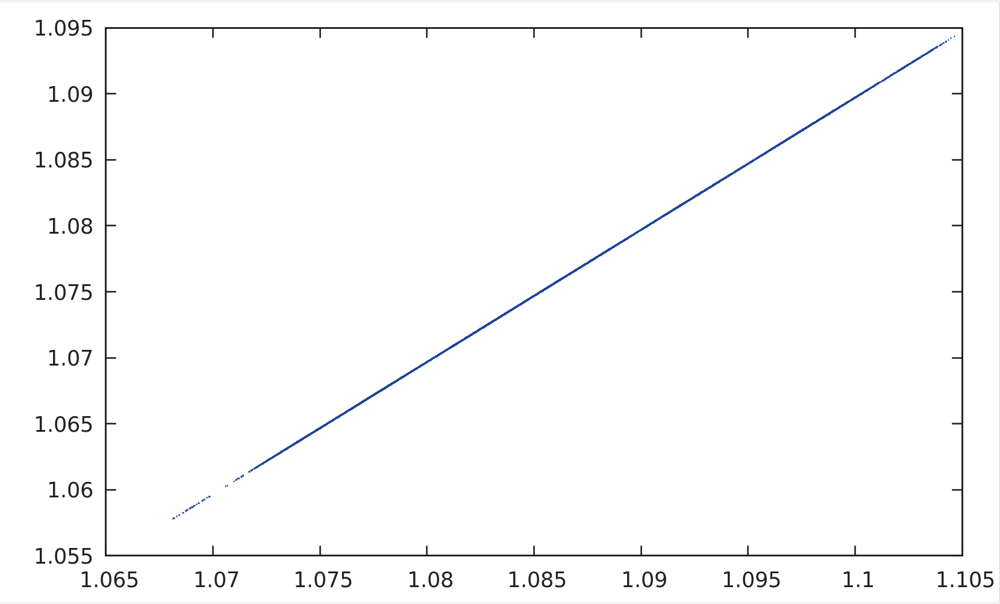

The project is about using machine learning to predict the closing exchange rate of Euros and US Dollars. We have used the mentioned currencies but you can work with any pair of given currencies.However, you have to make slight modifications in our code.
Also, the data obtained from the code was plotted on the graph and compared with given actual values of closing rate.As you can see from the comparison the data obtained the data obtained was very close to the actual value as the line is almost equal to y=x where y represents the value obtained and x represents the actual value.
